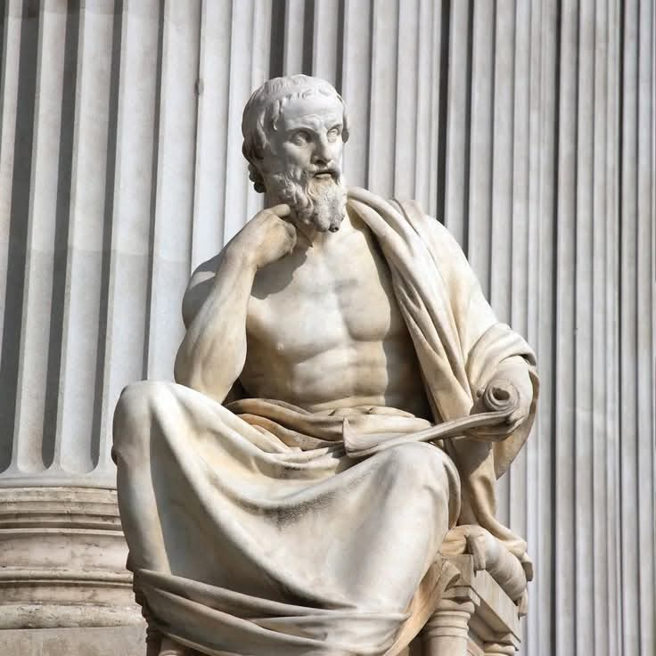

Kahulugan ng Kasaysayan
HERODOTUS (Ama ng Kasaysayan)
Ang kasaysayan ay pagsasalaysay o pagsisiyasat ng mga pangyayari sa nakaraan.

THUCYDIDES (Ebidensya)
Isang masusing pag-aaral ng mga pangyayari batay sa ebidensya at katotohanan.

ZEUS SALAZAR
Ang kasaysayan ay saysay na may saysay para sa isang pangkat ng tao.

RENATO CONSTANTINO
Ang kasaysayan ay kasangkapan sa paghubog ng kamalayang pambansa at pag-unawa sa lipunan.
KAHULUGAN NG KASAYSAYAN
Ang sistematikong pag-aaral ng mga pangyayari sa nakaraan batay sa mga ebidensya upang maunawaan ang kasalukuyan at makapagbigay-gabay sa hinaharap.
Pag-aaral ng Nakaraan
Sinusuri ang mga pangyayari, tao, at lugar na naganap noon at hinuhubog ang lipunan.
Tala ng mga Pangyayari
Nagtatala at nagpapakahulugan sa mga pangyayaring naganap sa nakaraan.
Batay sa Ebidensya
Gumagamit ng mga dokumento, larawan, artepakto, oral na salaysay at iba pang talaan bilang batayan.
Pag-unawa sa Kasalukuyan
Tumutulong upang maunawaan ang mga isyu at kalagayan ng lipunan ngayon.
Paghahanda sa Hinaharap
Nagbibigay ng aral at gabay upang makagawa ng mas mabuting desisyon sa hinaharap.
Sa madaling salita, ang KASAYSAYAN ay hindi lamang tungkol sa nakaraan, kundi ito ay daan upang maunawaan ang kasalukuyan at hubugin ang mas maayos na hinaharap.